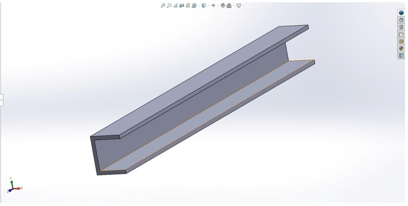
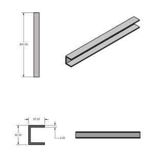
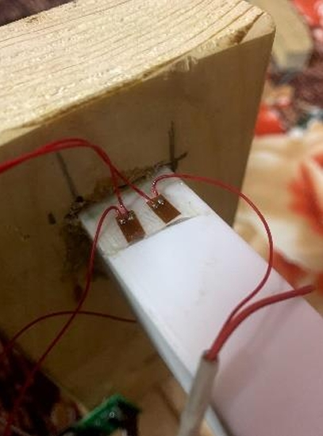
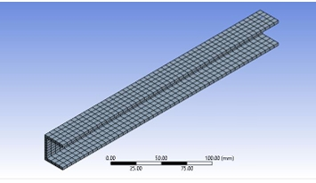
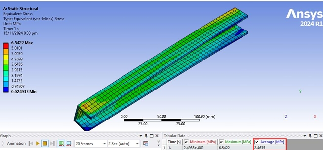
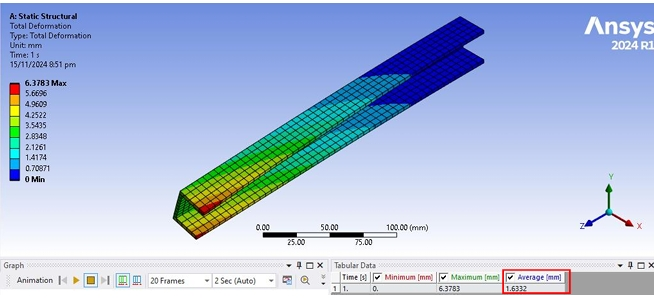
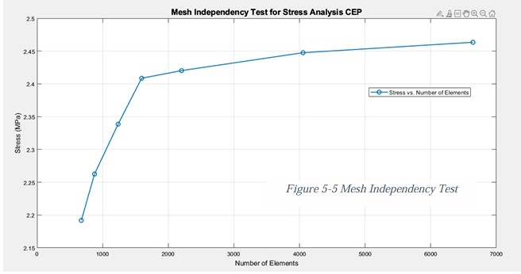

Project Overview
This project performed a comprehensive stress analysis of a 3D-printed PLA C-beam under static cantilever loading — validated across three independent methods: analytical calculation, physical experimentation, and Finite Element Analysis (FEA). The beam (300mm length, 25mm flange width, 3mm wall thickness) was subjected to a 19.62 N point load at its free end. My contribution covered the full numerical workflow: 3D modelling in SolidWorks, static structural FEA in ANSYS, and a mesh independence study across seven mesh sizes. The other two team members handled analytical derivations and experimental strain gauge testing respectively, with two of us co-authoring the final report.


Challenge
C-beams with open cross-sections are prone to twisting under load, which analytical models typically ignore. The challenge was to accurately predict stress, strain, and deflection while accounting for this behaviour — and then validate the simulation against physical measurements. The experimental method introduced its own complexity: strain gauges had to be precisely bonded to the PLA surface, wired in a Wheatstone bridge configuration, and read through an Arduino-based data acquisition system. Achieving reliable strain data required careful calibration before any load was applied. On the FEA side, selecting the correct mesh size was critical — too coarse and the results diverge; too fine and computation becomes inefficient.

Solution
The C-beam was modelled in SolidWorks with exact geometry and imported into ANSYS Mechanical for static structural analysis. A 19.62 N force was applied at the free end with a fixed support at the root. Seven mesh configurations were tested — from 30mm (100 elements) down to 6mm (900 elements) — and a MATLAB mesh independence plot confirmed convergence. Mesh 7 (6mm) was selected as the final configuration, with stress results stable within 2% of the previous iteration. For the experiment, strain gauges were bonded along the upper flange at high-stress locations and connected to an HX711 signal amplifier and Arduino Uno for real-time strain logging. Results from all three methods were compared directly.



